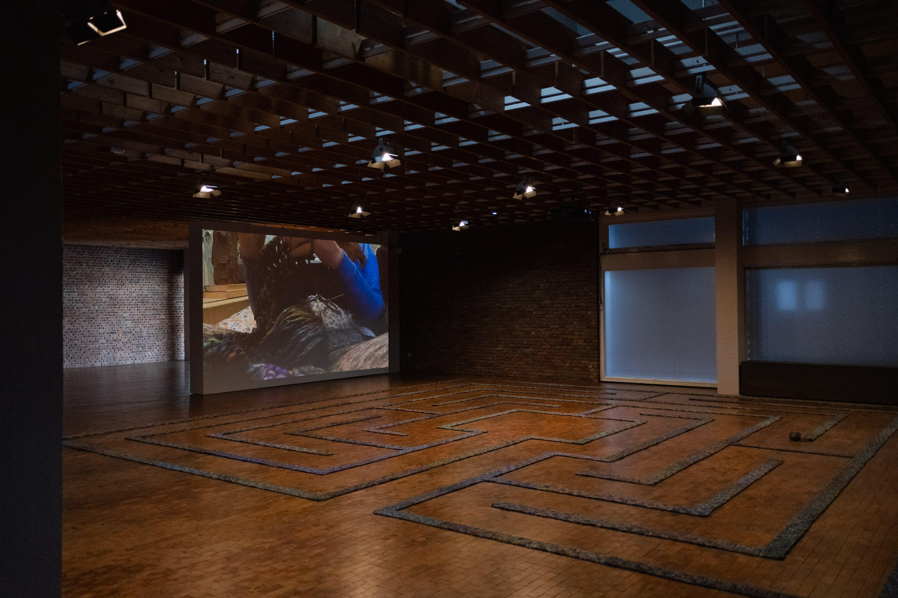

The numbers are stunning: GPT-3 boasts 175 billion parameters, 570 gigabytes of data, and 10 million daily queries. GPT-4 is even larger, but its makers won't share by how much. How can we fathom the size, scale, and power of systems so immense and opaque?
No Knots, Only Loops goes beyond AI awe. Instead it offers a material approximation of the scale of machine learning while presenting alternative ways to imagine its logic. With 36,672 stitches made over six months and covering 64 square metres, the large-scale crochet sculpture anchoring the work invites participants to wander a woven path and to consider embodied knowing within a system created by hand, node by node. Each 8-stitch row repeats a pattern, performs an algorithm, and, as such, represents the simple computational operations that construct AI. Rather than hiding human traces, these gestures reveal experiences of the body, labour, and craft — countering eager hype with contemplative inquiry and a felt sense of soft, twisted wool looped over and over into a complex system.
The labyrinth — an ancient symbol marking land worldwide — offers a single meditative path. The labyrinth in No Knots, Only Loops counters the logic of mazes, which keep us goal-oriented and misdirected. Here, it suggests understanding AI's black box not as a void dictated by binary logic but as a powerful space for provocations that do not make assumptions or draw conclusions.
This work joins ongoing artistic research into "Intersectional AI," arguing that anyone should be able to understand what AI is and what it could be. It calls for queer, feminist, anti-racist, anti-ableist, and neurodiverse methods for conscientious data stewardship, and it experiments with developing small community-focused datasets to counter tools like ChatGPT.
No Knots, Only Loops offers one route into machine learning's potential through tangible and approachable care and craft, line and loop.
Featured in the exhibition Broken Machines & Wild Imaginings at Akademie der Künste Berlin, June 2023 showcasing work by JUNGE Akademie AI Anarchies Fellows